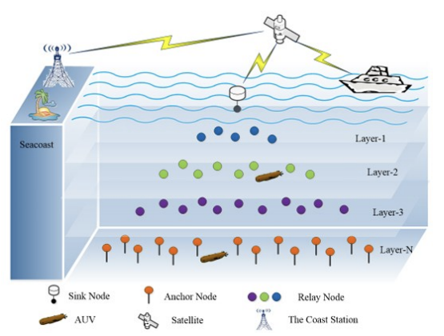
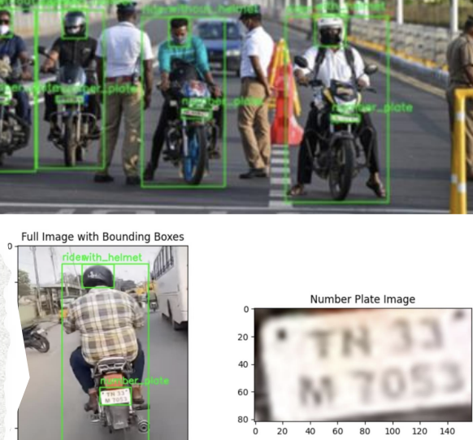

|
Research
My research interests span the fields of computer vision, deep learning, and NLP, with a strong focus on data-efficient learning strategies such as semi-supervised, unsupervised, and self-supervised approaches. I am particularly interested in designing intelligent systems and agents that can autonomously perceive, explore, and interact with their environments by using raw data and self-driven learning signals.
IEEE
|
Highlights
- Received Top Performer Award for Batch of 2021-25, SRMIST
- Won the Tenacity Award at TAC Challenge, an international subsea drone competition at Norway
- Project Lead at SRMAUV, overseeing industry-level tasks such as subsea docking, pipeline inspection, and
valve intervention (2023-25)
- Previous student research collaborator at The Directorate of Entrepreneurship and Innovation at SRMIST, for AI-Driven Debris Cleaning System, backed by DRDO and NIOT, with funding support of INR 9,00,000 from The SRM Innovation, Incubation, and Entrepreneurship Centre.
|
|

|
Dynamic MAC Protocol for Layered Data Aggregation in Underwater Wireless Sensor Networks
IEEE/Second International Conference on Intelligent Cyber Physical Systems and Internet of Things (ICoICI), 2024
Developed a smart MAC protocol for underwater sensor networks using TDMA and multichannel strategies, boosting data flow and reducing collisions. Combined PSO, ACO, fuzzy logic, and GWO to improve routing, energy use, and communication efficiency in crowded, layered network environments.
|
|

|
AI-Driven Safety: Automated Helmet Detection and License Plate Recognition
IEEE/9th International Conference on Communication and Electronics Systems (ICCES), 2024
Built traffic monitoring system for real-time helmet and license plate detection, achieving 93.7% accuracy. Combined CNNs and EasyOCR to maintain high performance in challenging conditions, with a mAP50 of 95.8% and robust recognition across varied environments.
|
|
{kind=link}
{kind=link}